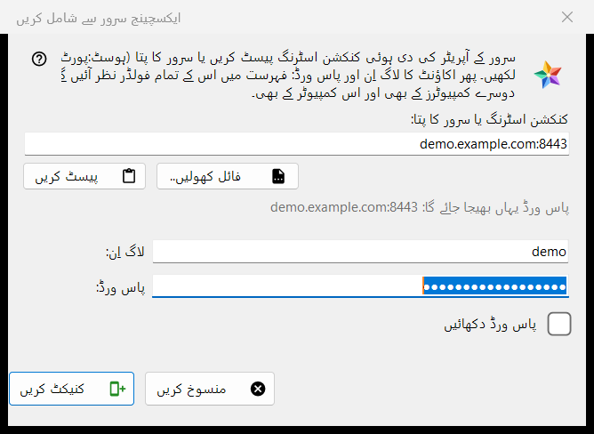
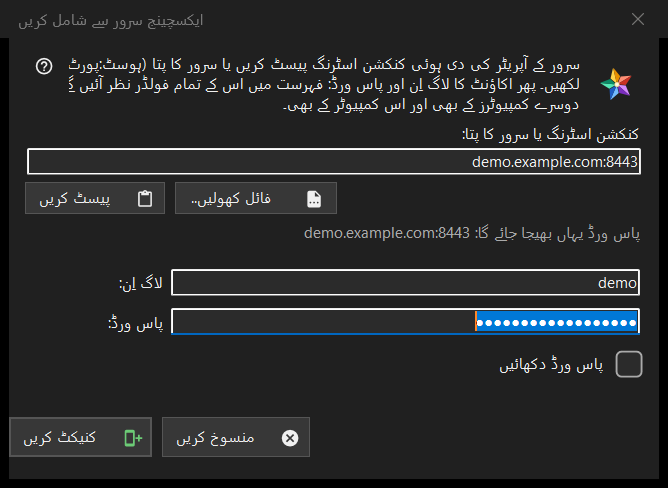

ایکسچینج سرور سے شامل کریں
یہ کس مقصد کے لیے ہے
اس کمپیوٹر کو ایکسچینج سرور کے اکاونٹ سے جوڑتی ہے، تاکہ اس اکاونٹ کے تمام آلات کے فولڈر وسائل کی فہرست میں نظر آئیں۔ یہ وسائل کی فہرست کے میرے آلات حصے کے ایکسچینج سرور سے شامل کریں.. بٹن سے کھلتی ہے، اور تب بھی جب آپ ویوئر میں کنکشن اسٹرنگ یا فائل چھوڑیں یا اسے فولڈر کے خانے میں ٹائپ کریں۔


اس ترتیب میں
- سرور کے آپریٹر کی دی ہوئی کنکشن اسٹرنگ پیسٹ کریں، پتہ host:port کی شکل میں ٹائپ کریں، یا فائل کھولیں.. دبائیں۔
- لائن (پاس ورڈ یہاں بھیجا جائے گا: ..) دیکھیں: وہی پتہ واحد جگہ ہے جہاں پاس ورڈ جاتا ہے۔
- لاگ ان اور پاس ورڈ لکھیں۔
- کنیکٹ کریں دبائیں۔
- اگر پروگرام سرور کے سرٹیفکیٹ کے بارے میں پوچھے تو فنگر پرنٹ کو اس فنگر پرنٹ سے ملائیں جو آپریٹر نے بتایا ہے۔
عناصر
کنکشن اسٹرنگ یا پتہ
پہلا خانہ ایک کنکشن اسٹرنگ (جو FMSEXCH1: سے شروع ہوتی ہے) یا host:port کی شکل میں پتہ لیتا ہے۔ پیسٹ کریں اسے کلپ بورڈ سے بھرتا ہے، ٹیکسٹ سے یا QR کوڈ کی تصویر سے، اور فائل کھولیں.. ایک .fmsexch فائل یا QR تصویر پڑھتا ہے۔ پیسٹ کرنا صرف فارم بھرتا ہے: کنیکٹ کریں دبانے سے پہلے کچھ نہیں بھیجا جاتا۔ خانے کے نیچے کی لائن دکھاتی ہے کہ پاس ورڈ کہاں جائے گا؛ ویب پتے، فولڈر کوڈ یا خراب اسٹرنگ وہاں سادہ زبان میں مسترد کر دیے جاتے ہیں۔
لاگ ان اور پاس ورڈ
اگر اسٹرنگ میں لاگ ان ہو تو لاگ ان کا خانہ اسی سے بھر جاتا ہے۔ پاس ورڈ چھپا رہتا ہے؛ پاس ورڈ دکھائیں اسے دکھاتا ہے۔ کنیکٹ کریں دبانے پر پہلا بائٹ کمپیوٹر سے نکلنے سے پہلے ہی پاس ورڈ کا خانہ خالی کر دیا جاتا ہے۔ اسٹیٹس لائن پیش رفت دکھاتی ہے اور ناکامی پر وجہ: نہ ملنے والا لاگ ان یا پاس ورڈ، بہت زیادہ کوششیں، یا جواب نہ دینے والا سرور۔
ایک دعوتی اسٹرنگ
جو اسٹرنگ دعوت ہو وہ پہلے ہی سرور کا نام بتاتی ہے اور ونڈو کو اکاونٹ بنانے کی حالت میں لے جاتی ہے: پاس ورڈ ایک بار اور خانہ اور پاس ورڈ کے اصولوں کا نوٹ نظر آتا ہے (کم از کم 10 حروف، ایک بڑا اور ایک چھوٹا لاطینی حرف اور ایک ہندسہ)، اور بٹن کا نام اکاونٹ بنائیں ہو جاتا ہے۔ اصولوں پر آخری فیصلہ سرور کا ہے۔
سرور کا سرٹیفکیٹ
سرٹیفکیٹ نامعلوم ہو تو ایک سوال اس کا فنگر پرنٹ دکھاتا ہے اور پوچھتا ہے کہ سرور پر بھروسا کر کے اسے یاد رکھا جائے یا نہیں؛ ڈیفالٹ جواب نہیں ہے۔ اگر اسٹرنگ کسی فنگر پرنٹ کا نام لے اور سرور کوئی اور دکھائے تو دونوں دکھائے جاتے ہیں، کچھ یاد نہیں رکھا جاتا اور کوئی پاس ورڈ نہیں بھیجا جاتا۔
دوبارہ سائن اِن
موجودہ سرور اندراج کے لیے دوبارہ سائن اِن کرنے کے واسطے کھولی جائے تو ونڈو پتہ اور لاگ ان صرف پڑھنے کی صورت میں دکھاتی ہے، اور اسی اندراج کا یاد رکھا گیا فنگر پرنٹ ہی بھروسے کی بنیاد ہے۔